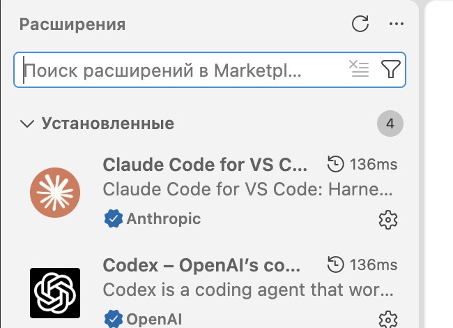
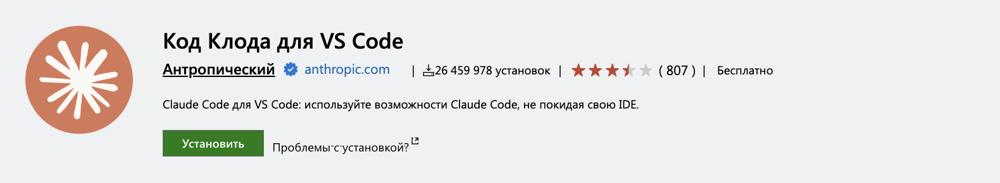
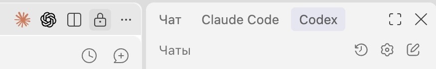
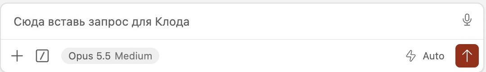
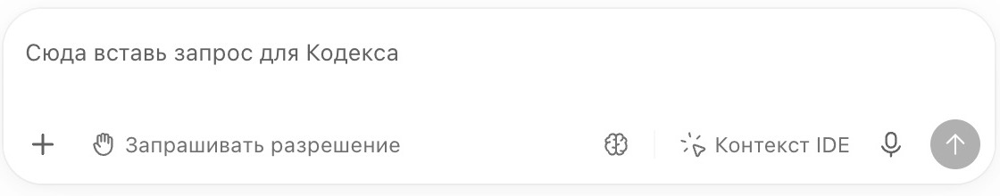

Claude Code + Codex · VS Code

Claude Code и Codex в одном VS Code: чаты и файлы рядом
Клод в одном окне, Кодекс в другом, а файл с результатом приходится искать отдельно. Когда задач несколько, переключаешься уже между целой стопкой окон. Как держать нужные разговоры и работу перед глазами?
Зачем собирать работу в одном окне
В Visual Studio Code (VS Code) можно расположить чаты Клода и Кодекса рядом, а между ними открыть файл проекта. Ты видишь ответы обоих и сразу смотришь, что получилось в тексте, сценарии или HTML-странице. Для этого не приходится переходить из одной программы в другую
- Два разговора видны одновременно. Можно прочитать ответ Клода и сверить его с ответом Кодекса, не пряча один чат за другим
- Для разных задач можно оставить отдельные вкладки. Например, в одном чате обсуждать статью, в другом собирать страницу. Нужный разговор выбираешь внутри того же редактора
- Результат лежит рядом с обсуждением. Открываешь сохранённый файл из папки проекта, читаешь правки и возвращаешься в нужный чат. Искать его через отдельное окно с папками не нужно
Например, ты обсуждаешь с Клодом текст раздатки, затем просишь Кодекс оформить его в HTML. Сохранённый текст доступен обоим из одной папки, страница открыта рядом, а каждый разговор остаётся в своей вкладке. Так удобнее видеть, что уже сделано и к какой задаче относится ответ
Передача задач настраивается отдельно
Клод может запускать Кодекс через CLI: отдельную программу, которой передают задание командой. Для этого два чата в VS Code не нужны. Можно работать и из другого приложения, если у Клода есть возможность запускать установленный Codex CLI. Расположение в одном окне само по себе не включает общение между помощниками
Ниже сначала соберёшь удобное окно для своей работы. Затем сможешь отдельно настроить запуск Кодекса Клодом, если хочешь передавать ему задачи без ручного копирования
Что понадобится перед настройкой
Нужны Visual Studio Code, аккаунт Claude и аккаунт ChatGPT с доступом к Codex. Если VS Code ещё нет, скачай его с официального сайта Microsoft, установи и запусти. Если уже пользуешься им, открой своё обычное окно
Приложение Codex и программа VS Code - разные окна. Дальше все пункты меню нужно нажимать именно в Visual Studio Code. Открытая в браузере статья остаётся инструкцией, команды из неё выполняются в редакторе
Claude Code и Codex добавляются в VS Code как расширения: дополнения, которые дают редактору новые функции. После установки у каждого появится свой чат внутри VS Code. Если они уже установлены, повторная установка не нужна
Аккаунты и лимиты остаются отдельными
В Claude Code входишь через аккаунт Claude, в Codex - через ChatGPT. Одна оболочка не объединяет подписки и не гарантирует экономию. Доступ к работе зависит от твоих тарифов
Сначала откроешь свою папку, установишь недостающие расширения и расположишь чаты рядом. После этого можно остановиться или отдельно настроить передачу заданий от Клода Кодексу
1. Открой VS Code и свою папку проекта
Открой в VS Code папку, где лежит твоя работа: Файл → Открыть папку…. Если проект уже открыт, оставь его. Эта папка будет общей для Клода и Кодекса
Если VS Code спрашивает о доверии к папке
Для своей знакомой рабочей папки выбери Да, я доверяю авторам. В ограниченном режиме работа агентов может быть недоступна. Незнакомую скачанную папку сначала нужно проверить
2. Найди и установи расширения внутри VS Code
Нужны два расширения: Claude Code for VS Code от Anthropic и Codex от OpenAI. Если у тебя уже есть их иконки и открываются чаты, переходи к следующему шагу
Как установить, если иконок ещё нет
Открой Вид → Расширения, найди оба дополнения через поле поиска слева и нажми Установить в их карточках. Названия издателей помогут отличить официальные расширения от похожих. Если есть кнопки «Отключить» и «Удалить», дополнение уже установлено


Официальные карточки: Claude Code и Codex
3. Открой два чата и расположи их рядом
В верхней части редактора нажми солнышко Клода, затем значок Кодекса рядом с ним. Они открывают соответствующие чаты. В некоторых раскладках значки находятся на боковой полосе

Если расширение просит войти, используй свой аккаунт Claude для Клода и ChatGPT для Кодекса. После входа вернись в VS Code
Как увидеть оба чата одновременно
Если Клод открыт в редакторе, а Кодекс в боковой области справа, они уже видны вместе. Оставь такое расположение
Если оба открылись вкладками сверху и один скрывает другой, перетащи вкладку Codex за её название к правому краю редактора. Когда правая половина подсветится, отпусти. Получатся две области с отдельными чатами. Их ширину можно менять, двигая границу между ними
Как открыть ещё и файл рядом с чатами
В Вид → Проводник видны файлы общей папки. Если Кодекс занимает боковую область, файл можно перетащить из Проводника к краю области редактора с Клодом: на подсветке отпусти, чтобы файл открылся рядом с его чатом
Если оба чата открыты именно вкладками редактора, выбери Вид → Макет редактора → Три столбца. Перетащи вкладку Кодекса в правый столбец, а нужный файл из Проводника - в середину. На узком экране удобнее оставить два чата, а файл открывать по мере необходимости
Результат: оба чата видны в одном окне. Это удобное расположение для тебя; передачу заданий от Клода Кодексу включим отдельно на шаге 5
4. Дай им одну папку и общие правила
Папку ты уже открыл на шаге 1. Теперь нужно убедиться, что оба помощника работают именно в ней, и дать им общие правила
Скопируй следующий запрос и отправь его по очереди в чат Клода и в чат Кодекса. Вставлять нужно в поле сообщения, где ты обычно пишешь задачу. Кнопка отправки - стрелка справа в этом поле


Пока ничего не меняй. Покажи полный путь к папке проекта, в которой ты работаешь, и названия файлов и папок в её корне. Прочитай инструкции проекта, назови файлы, из которых взял правила, и одно конкретное правило из каждого
Сравни ответы: путь должен совпадать с папкой, которую ты открыл на шаге 1. Если один из помощников назвал другой путь, ничего ему пока не поручай. В поле его чата напиши: «Ты назвал другую папку. Нужна папка, открытая в этом окне VS Code. Помоги выбрать её, пока ничего не меняй». После исправления отправь проверочный запрос ещё раз
Правила проекта Codex читает из AGENTS.md. У Claude Code традиционно используется CLAUDE.md; новые версии также умеют читать AGENTS.md, но загрузка зависит от версии и существующих файлов инструкций. Наличие обоих файлов ещё не означает, что Клод прочитал оба
Следующий большой запрос отправь только в чат Клода: скопируй блок, вставь в его поле сообщения и нажми стрелку отправки. Клод должен сохранить действующие правила проекта и подключить общую версию, а не заменить их пустым шаблоном
Промпт №1: проверь и закончи настройку
Помоги настроить Claude Code и Codex в одном окне VS Code, с двумя видимыми чатами и одной папкой проекта. Сначала проверь, что уже установлено. Не переустанавливай рабочие расширения, не переноси проект и не создавай его копию. Если нужна моя помощь в интерфейсе, объясняй по одному шагу: что нажать, где и что должно появиться. Мне нужны оба поля ввода одновременно. Проверь общие правила проекта. Codex должен читать AGENTS.md. Определи, откуда твоя версия Claude Code загружает инструкции. Сохрани существующие правила и настрой чтение общей версии без двух расходящихся копий. Если ты уже загружаешь AGENTS.md напрямую, второй импорт не добавляй. Если используется CLAUDE.md, проверь подключение общей версии через @AGENTS.md и учти особенности установленной версии. Не перезаписывай существующие файлы вслепую. Если в проекте уже настроены рабочие инструкции и память, сохрани их и проверь, что оба помощника могут прочитать нужные файлы. Не требуй установки дополнительной системы для этой настройки. В конце покажи путь проекта, какие файлы инструкций читает каждый агент, одно конкретное правило из каждого и что осталось сделать руками. Одного ответа «готово» недостаточно
Общие файлы не объединяют переписки
Кодекс не узнает автоматически, что ты сказала Клоду в его чате. Решения, стиль, текущую задачу и принятый результат сохраняй в файлы проекта. Тогда второй помощник сможет их прочитать
Результат: оба агента называют один путь и показывают, откуда прочитали общие правила
5. Поручи Клоду запускать Кодекс
Если тебе достаточно чатов и файлов в одном окне, основная настройка закончена. Следующие два шага нужны, чтобы Клод сам запускал Кодекс. Их можно выполнить и без общей оболочки: важны установленный Codex CLI, вход в него и возможность Клода запускать команды в нужной папке
Теперь можно говорить о задаче только с Клодом. Он составит задание, запустит Кодекс, прочитает результат и проверит его. Для этого используется codex exec - запуск Codex CLI без отдельного диалога
Codex CLI - отдельная программа, которой дают задания командой. Она запускается в терминале: области для выполнения команд компьютера. Расширение с видимым чатом и CLI устанавливаются отдельно
Самостоятельно открывать терминал и вставлять команды из большого запроса ниже не нужно. Нажми Скопировать у промпта №2, вставь весь текст в поле сообщения Клоду и отправь. Клод проверит наличие CLI, при необходимости выполнит установку по официальной инструкции OpenAI и объяснит твои действия для входа. Если нужно подтвердить вход в браузере, это делаешь ты
Задание не появится само во втором открытом чате
Запуск через codex exec - отдельная сессия CLI. Видимая панель Codex остаётся для самостоятельной работы. Результат запущенной задачи Клод получает из вывода команды и файлов проекта
Промпт №2: раздели работу и проверь результат
Теперь сам передавай Codex подходящие части моих задач через codex exec. Я обсуждаю задачу с тобой, вручную переносить сообщения между чатами не хочу. Сначала проверь codex --version и codex login status. Если программы нет, установи официальный Codex CLI. Если вход не выполнен, запусти codex login и объясни, что мне сделать в браузере. После входа снова проверь codex login status. Данные авторизации не показывай. Перед первой работой предложи, что поручишь Codex, что оставишь себе и как проверишь результат. Передавай ему точное задание: цель, разрешённые файлы, ограничения и проверку. Запускай в нашей папке проекта. Начни с небольшой задачи только на чтение. Запусти Codex с --sandbox read-only: пусть перечислит файлы в корне, укажет прочитанные инструкции проекта и одно правило из каждого файла. Покажи команду запуска и настоящий ответ. Для задач с правкой файлов используй разрешение workspace-write только в нужной рабочей папке. Не отключай защиту и не обходи запросы разрешений. Не редактируй одновременно с Codex одни и те же файлы. В каждом задании запрещай Codex делать git add, коммиты, push, удалять файлы или публиковать результат без моего отдельного поручения. После выполнения сам открой результат и проведи подходящую проверку. Если результат не соответствует заданию, исправь или забери работу обратно. Покажи мне итог и доказательство проверки
Подходящие поручения: проверить ссылки, собрать HTML по готовому тексту, обработать набор файлов, написать скрипт по точному заданию. Замысел и критерии качества остаются у Клода. Такое разделение - твоя настройка работы, а не обязательная роль каждой модели
Результат: Клод действительно запустил Codex CLI и показал его ответ. Обещание «буду делегировать» без запуска настройку не подтверждает
6. Сохрани схему для следующих сессий
Если договориться только в переписке, в новом чате придётся напоминать. Запиши в правила проекта, когда Клод должен поручать работу Кодексу и как проверять его ответ. Тогда в новом чате эту договорённость можно прочитать из файла
Этот запрос тоже отправь только Клоду, в его обычное поле сообщения
Промпт №3: запиши постоянный алгоритм
Сохрани нашу схему работы с Codex для следующих сессий в этой папке проекта. Правило: перед объёмной задачей определить, какую часть можно передать Codex с точным заданием. Маленькую или неделимую задачу делать самому. Codex запускать через codex exec в папке проекта, его результат проверять до показа мне. Не менять параллельно одни и те же файлы. В заданиях сохранять запрет на git add, коммит, push, удаление и публикацию без моего поручения. Используй действующие инструкции и память проекта. Общую схему запиши в AGENTS.md и проверь, что ты тоже её читаешь. Если есть memory/MEMORY.md, добавь ссылку на подробное правило. Не удаляй прежние инструкции и не создавай вторую расходящуюся копию. Покажи точные места записи. Затем объясни, как проверить правило в новом чате. Не обещай «навсегда»: настройка должна подтверждаться чтением файлов после перезапуска. Если предлагаешь хук-напоминание в Claude Code, отдельно объясни его событие и действие. Он не заменяет проверку результата. Существующие хуки и настройки разрешений не меняй
Нажми плюс в кружке в верхней части чата Клода, чтобы начать новый разговор в той же папке. В нём попроси: «Прочитай правила проекта. Как ты будешь распределять работу с Codex? Пока ничего не запускай». Сверь ответ с сохранённым алгоритмом
Результат: новый чат прочитал сохранённую схему. Ты видишь, что настройка пережила смену разговора
Проверь, что всё действительно связано
- Оба чата видны в одном окне VS Code
- Оба агента называют одну и ту же локальную папку проекта
- Оба прочитали общие правила и могут назвать их источник
- Если включена передача задач, Клод показал настоящий результат запуска Codex CLI
- Если сохранял передачу задач, новый чат прочитал алгоритм из файлов проекта
Если первые три пункта выполнены, оба помощника работают в одной папке и читают общие правила. Передача задач подтверждена отдельно: Клод показал команду запуска и настоящий ответ Кодекса. Чтобы не переносить объяснения из чата в чат, сохраняй новые решения там же, в проекте
Официальные инструкции
- Anthropic: расширение Claude Code в VS Code
- OpenAI: расширение Codex
- Microsoft: расположение областей редактора и перемещение вкладок
- Microsoft: доверие к рабочей папке
- OpenAI: вход через ChatGPT и API-ключ
- OpenAI: инструкции в AGENTS.md
- Anthropic: загрузка AGENTS.md и общие инструкции
- OpenAI: codex exec и разрешения на работу
- Anthropic: хуки и события
Если запутался на любом шаге
Если не знаешь, куда нажать, как настроить или что делать дальше, напиши Клоду обычными человеческими словами. Скопируй запрос в его чат и замени текст в квадратных скобках на свою задачу и место, где остановился
Я новичок и запутался. Хочу [что именно хочу сделать]. Сейчас я [где нахожусь и что уже сделал], но не понимаю [что не получается или куда двигаться дальше]. Помоги мне разобраться и проведи по шагам обычным человеческим языком. Объясняй, куда нажать, что написать и что должно появиться. Давай по одному шагу и жди моего ответа. Если тебе не хватает информации, сначала спроси
ИИ-Лагерь
Сайт, бот и контент-завод для твоего дела
В ИИ-Лагере с Claude Code и Codex собирают конкретные части своего проекта: продающий сайт под свой оффер, приём оплат, бота с цепочкой сообщений для клиентов и контент-завод для подготовки роликов и каруселей
Первые три дня бесплатные, записи можно смотреть в своём темпе. Выбери задачу для своего дела и начни собирать её вместе с ними
Собрать свою систему в ИИ-Лагере